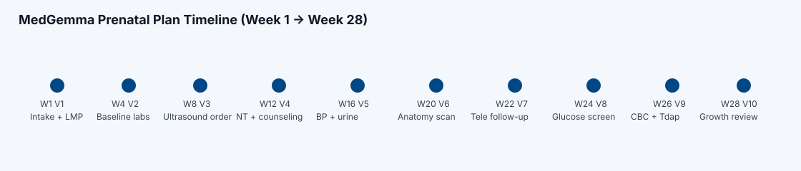

PATHFinder Agent: Planner for Appropriate Tailored Healthcare Finder Agent
Intuitive, interactive agentic systems for patients, nurses, and clinicians to provide prenatal care
Example single-patient workflow: data collection, shared planning, and
care-delivery adjustments based on social needs and access.
Step 1
Step commentary
Prenatal Intake Snapshot
Main pipeline fields pre-filled
Care Chat + Embedded Social Needs Form
MedGemma + Gemini UI
Tailored Prenatal Plan Report (Week 8 -> Week 39)
Medical milestones + social adjustments
Visit
Week
Modality
Tests / Actions

Oversight Cockpit
High-level status only
Takeover inactive
Oversight Notes
No full transcript shown
Clinician Cockpit - Plan Review
Received from Care
MedGemma Agent Window
Clinician edits
MedASR Patient-Clinician Transcription
Live transcription simulation
Motivation
Prenatal care is care provided to birthing people, including medical care, screening tests, answers to your questions, and help finding social support and community resources during pregnancy.
“Prenatal care can improve the detection and management of chronic conditions and pregnancy complications, particularly for individuals with an increased risk of adverse outcomes” - ACOG
About 4 million pregnant people access prenatal care each year in the United States. At this scale, fixed,
one-size-fits-all workflows can miss practical barriers and increase the risk of delayed follow-up.
The core problem is aligning medically important milestones with real-life access constraints so that patients
can consistently complete recommended care.
Proposed Solution
Provide an LLM-based agentic system that allows providing prenatal care in a safe, scalable, and aligned manner allowing all stakeholders to help expand provision of care and redirect efforts to improving care.
In collaboration with expert clinicians, we present PATHFinder, an agentic system built powered by MedGemma, MedASR, Gemini-2.5-Pro, and Gemini-TTS to provide care to patients, conversational and clinical oversight to enable tailored prenatal care planning.
Team
Dr. Alex PeahlAssistant Professor, Obstetrics and Gynecology (Author: ACOG prenatal tailoring guidelines)Dr. Samia AbdelnabiClinical Assistant Professor, Health Behavior and Clinical SciencesDr. Liz Bondi-KellyAssistant Professor, Computer Science and EngineeringVaibhav BalloliThird-year PhD Candidate, Computer Science and Engineering
Impact
The expected impact is earlier risk visibility, better adherence to key prenatal milestones, and fewer missed
visits by tailoring modality and support pathways to transportation, childcare, and nutrition needs.


Step commentary